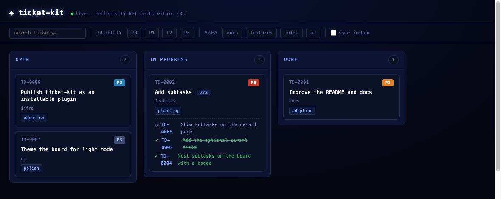

AI-first · zero-dependency · file-based
An AI-first ticket system for Claude Code. Claude authors and grooms markdown tickets right in your repo; you watch them move on a neon board. Every change is a file edit, so your git history is the audit log.
plugin marketplace add chadfurman/ticket-kit
plugin install ticket-kit@ticket-kit
--- id: TD-0001 title: Set up ticket-kit status: in-progress priority: P0 area: web ---
the loop
There's no form to fill out and no app to switch to. You describe
the work; ticket-kit's agents keep tickets/*.md in sync.
the board
A zero-dependency CLI serves it — static dashboard or a live
server with ~3s updates. Cards nest subtasks and carry a [done/total] badge.
It's read-only on purpose: changes happen in the files.

why it's different
Every ticket is a markdown file with YAML frontmatter. Grep it, diff it, edit it in your editor — no database, no export.
Tickets change by editing files, so every status move, re-rank, and edit is a commit. Your history already answers "who, when, why".
The CLI is Node built-ins only — nothing to npm install to run the
board. It drops into any repo and stays out of your lockfile.
Let change-factory run the change while ticket-kit tracks the work. Two tools, one loop.
the format
Add a parent: and a ticket nests as a subtask;
leave it off and it's a top-level card. That's the whole schema.
--- id: TD-0002 # PREFIX-NNNN, matches the filename title: Add the toggle UI status: open # a column key, or "icebox" priority: P1 # P0 = most urgent rank: 20 # tie-breaker; lower floats higher area: web parent: TD-0007 # OPTIONAL — makes this a subtask created: 2026-06-21 ---